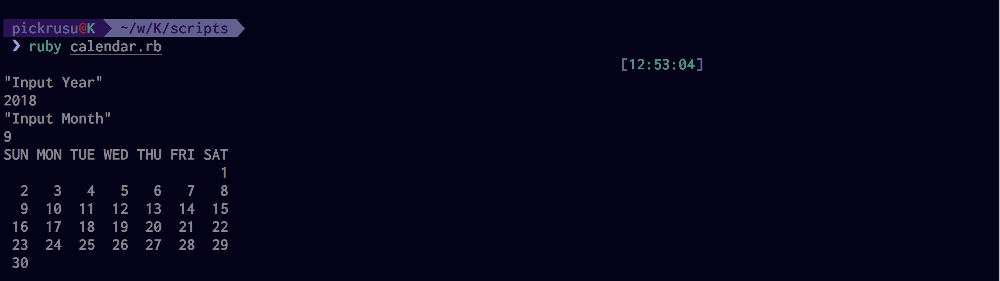
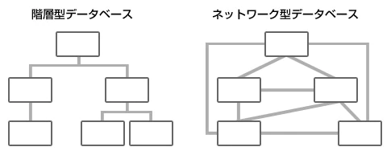
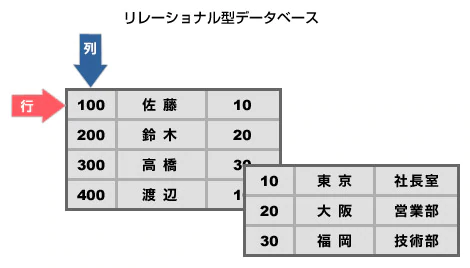
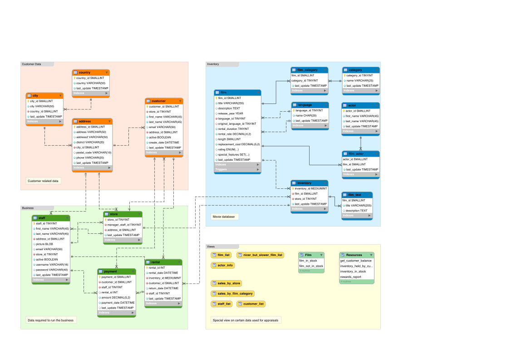

バックエンドエンジニア入門コース Vol.2
***
Agenda
- トレーニング概要
- 前回の振り返り
- データーベース概論 / ORマッパー
- ユーザー登録機能をつくろう
- バリデーションを設定しよう
トレーニング概要
Twitterクローンを作成しよう
Day1
Rails環境の立ち上げから簡単なHTML編集まで行います。
- Web概論
- Ruby/Rails概論
- Git基礎
- HTML基礎
Day2
Userの登録機能を作成します
- データベース基礎
- MVCフレームワーク / ORマッパー解説
- 組み込み
Day3
Tweet機能をデータベース設計からModel View Controllerなどを一通り作成します
- データーベース設計
- Rails概論
前回の振り返り
前回やったこと
- Web概論
- Ruby概論
- Rails概論
- ハンズオンズ (HTML編集)
Rubyの基本構文
Ruby基本その2
FizzBuzz問題
- 1から100までの数を順番に出力
- 3で割り切れる数ならFizz
- 5で割り切れる数ならBuzzと出力
- 両方で割り切れるならFizzBuzzと出力
Try
https://repl.it/@pocke777/FizzBuzz-TemplateFizzBuzz問題(回答例)
Ruby基本
確率を求めてみよう!
- ["kawasaki", "suzuki", "toyota", "subaru", "honda"] という配列の中から1つの値をランダムに取り出してください。
- この操作を1000回繰り返してそれぞれの値が出力された確率を表示しましょう
実行例
$ ruby scripts/chapter1/challenge2/q2.rb
kawasaki: 20.599999999999998%
suzuki: 19.2%
toyota: 15.8%
subaru: 22.1%
honda: 22.3%
Ruby (Class)
Rubyはオブジェクト指向言語で、数値、文字列、式などの値はすべてオブジェクトとして扱います。 また、クラスベースのオブジェクト指向言語を主にサポートしており、オブジェクトはそれぞれが特定のクラスに属します。 クラスの定義などクラスの基礎について説明します。
クラスの定義方法
Rubyでは、classキーワードを使ってクラスを作る。 今回は座標データをもつPointというクラスを作成していく
class Point
endインスタンスの生成
まだ、Point クラスには何も入れていないが、インスタンスを作ることはできる
$ p = Point.new
$ p.class # => Point
$ p.is_a? Point # => truePoint の初期化
多くのオブジェクト指向言語では、「コンストラクタ」を使ってこれを行うが、Ruby では、 initialize メソッドを使って行う
class Point
def initialize(x, y)
@x, @y = x, y
endインスタンスの生成
$ p = Point.new(1, 2) => #
# インスタンス変数であるxは外からアクセスができない
$ p.x => # undefined method `x' for # ゲッター/セッター
class Point
def initialize(x, y)
@x, @y = x, y
end
# インスタンス変数@xを取得するためのゲッター
def x
@x
end
# インスタンス変数@xに値をセットするためのセッター
def x=(val)
@x = val
end
end例
$ p = point.new(1, 2)
$ p.x => # 1
$ p.x = 5
$ p.x => # 5メソッド
class Point
def initialize(x, y)
@x, @y = x, y
end
# x座標に加算するメソッド
def increment
@x += 1
end
end例
$ p = point.new(1,2)
p.increment
p.x => # 2名簿管理用のクラスを作成しよう!
- 名前/性別情報を登録できる
- 生徒数と男女の割合を出力
クラスの雛形
class ClassRoom
def initialize
@students = []
end
end実行例
$ ruby scripts/chapter1/challenge7/q2.rb
選択してください
[0] 生徒を登録
[1] 生徒数/割合を取得
0
名前を入力
taro
性別を入力 { man or woman }
man
選択してください
[0] 生徒を登録
[1] 生徒数/割合を取得
0
名前を入力
hanako
性別を入力 { man or woman }
woman
選択してください
[0] 生徒を登録
[1] 生徒数/割合を取得
1
生徒数は2人です
男子の割合は50.0%です
女子の割合は50.0%です名簿管理用のクラスを作成 (回答)
カレンダー問題
標準入力により年号と月を受け取り、その月のカレンダーを出力してみよう
例

カレンダー問題 (回答)
データーベース概論 / ORマッパー
データーベースとは?
データベース（英: database, DB）とは、検索や蓄積が容易にできるよう整理された情報の集まり。 通常はコンピュータによって実現されたものを指すが、紙の住所録などをデータベースと呼ぶ場合もある。コンピュータを使用したデータベース・システムでは、データベース管理用のソフトウェアであるデータベース管理システムを使用する場合も多い。wiki(データーベース)
データモデル
データベースは、おもに「階層型データベース」「ネットワーク型データベース」「リレーショナル型データベース」の3つに分類できる.
- 階層型データベース
名前が示すとおりデータを階層型に格納/整理する仕組みをもったデータベース 階層型データベースでは、データはツリー構造で表し、データにアクセスするためのルートは一通りしかない
- ネットワーク型データベース
ネットワーク型データベースでは、データは網の目の形で表現される。 階層型データベースと比べ、複数の親データへのアクセスが可能になった。
 - リレーショナル型データベース (最も広く使われているデータモデル)
リレーショナル型データベース（以下、リレーショナル・データベース）は、データを行と列から構成される2次元の表形式で表す。

データ構造例
データーベースを操作してみよう
データベース接続
$ sqlite3 db/database.sqlite3
> .tables # テーブル一覧を表示
> .schema users # ユーザーテーブルのスキーマを確認
> select * from users; # ユーザー情報を取得
> insert into users (username, introduction, created_at, updated_at) values ('name', 'into', datetime('now'), datetime('now')); # ユーザー情報を追加
> delete from users where id = 1; # id=1のユーザーを削除ORマッパーとは?
O/Rマッピングとは、「オブジェクト」と「リレーショナルデータベース」をマッピング（対応付け）する 実装時のデータベース操作にかかわる煩雑な作業を軽減し、バグリスクを下げる
ORMフレームワークの種類
- ActiveRecord （Ruby on Rails）
基本的に、1つのクラスがDBの1テーブルに対応している。 クラスの属性は、テーブルの各カラムに対応。 クラスの1インスタンス（オブジェクト）は、DBの1レコードに対応する。 各クラスは、ActiveRecord::Baseの派生クラスとして実装し、app/models下に格納する。
- Core Data（Mac OS X、 iOS）
Mac OS X、iOSで利用できる、Appleによって開発されたORMフレームワーク。 データの永続化にSQLiteを使用している。
- Iciql (Java)
- Doctrine (PHP)
ORマッパーで操作してみよう
# コンソールの立ち上げ
cabox@box-codeanywhere:~/workspace/twwwitter-clone-rails$ bin/rails c
Loading development environment (Rails 5.1.6)
[1] pry(main)> User.superclass
=> ApplicationRecord(abstract)
[5] pry(main)> User.superclass.superclass
=> ActiveRecord::Base
# ユーザーの取得
[6] pry(main)> User.all
User Load (5.6ms) SELECT "users".* FROM "users"
=> []
# ユーザーの作成
[6] pry(main)> User.new({})
[7] pry(main)> u = User.new({ username: "name", introduction: "intro" })
=> #
[8] pry(main)> u.save
(0.1ms) begin transaction
SQL (1.6ms) INSERT INTO "users" ("username", "introduction", "created_at", "updated_at") VALUES (?, ?, ?, ?) [["username", "name"], ["introduction", "intro"],["created_at", "2018-09-18 06:12:00.759287"], ["updated_at", "2018-09-18 06:12:00.759287"]]
(34.4ms) commit transaction
=> true
# ユーザーの削除
[10] pry(main)> u.destroy
(0.1ms) begin transaction
SQL (1.2ms) DELETE FROM "users" WHERE "users"."id" = ? [["id", 2]]
(32.4ms) commit transaction
=> # ユーザー登録機能をつくろう
前準備
# config/application.rb
config.time_zone = 'Tokyo'
config.active_record.default_timezone = :local# config/application.rb
config.i18n.default_locale = :jaconfig/locales 日本語ファイルを追加 https://raw.githubusercontent.com/svenfuchs/rails-i18n/master/rails/locale/ja.yml
Controllerの作成
以下の手順を参考にユーザー登録機能を作成
- ルーティングの確認
- コントローラーにアクションの設定
- フォームのPostを確認
- ActiveRecordを使ってユーザーの作成
- 作成成功後にタイムラインへリダイレクト (こちらもルーティングを使用して確認)
ヒント
- Strong Parameters
DBへ入れたり更新したりするパラメータを制限してくれる仕組み 例 1.requireでPOSTで受け取る値のキーを設定 2.permitで許可するカラムを設定
params.require(:user).permit(:name, :email, :password) - redirect_to
redirect_toとはコントローラーのアクション内でページに切り替えるためのメソッドです。 http://railsdoc.com/references/redirect_to
Controllerの実装例
class UsersController < ApplicationController
def new
@user = User.new
end
def create
@user = User.new(user_param)
if @user.save
redirect_to timeline_index_path
end
end
private
def user_param
params.require(:user).permit(:account, :username, :introduction, :icon_url, :cover_url)
end
endバリデーションを設定しよう
バリデーションとは?
データのバリデーションといった場合、記述・入力されたデータが、あらかじめ規定された条件や仕様、形式などに適合しているかどうかを検証・確認することを表す。 形式的な妥当性の検証であり、意味論的に適切な内容かどうかは判断しない。
今回の要求
- アカウント名は必須
- ユーザー名は必須
- アカウント名は3文字以上
Controllerの実装
- バリデーションの失敗したらnewテンプレートをレンダリングするように変更
Modelの実装
- Active Recordバリデーションヘルパーを使用してバリデーションの設定 https://railsguides.jp/active_record_validations.html
Controllerの実装例
class UsersController < ApplicationController
def new
@user = User.new
end
def create
@user = User.new(user_param)
if @user.save
redirect_to timeline_index_path
else
render :new
end
end
private
def user_param
params.require(:user).permit(:account, :username, :introduction, :icon_url, :cover_url)
end
endModelの実装例
class User < ApplicationRecord
validates :account, presence: true, length: { minimum: 3 }
validates :username, presence: true
end